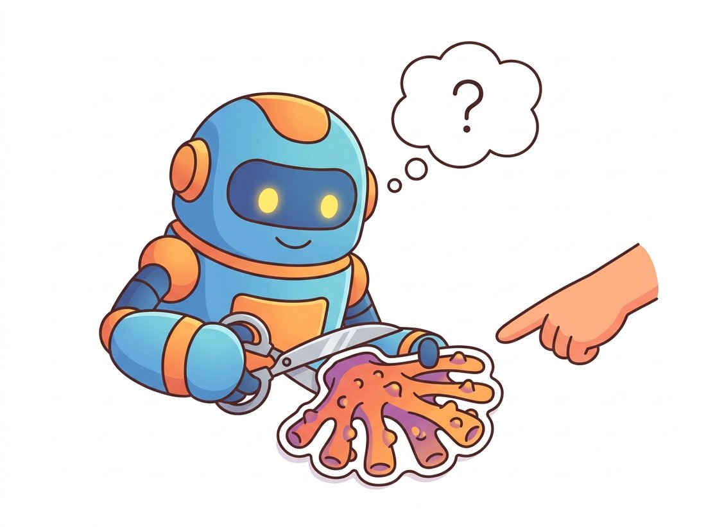

"They used to train a whole new me for every list of classes. Now they just point. A click here, a box there, and I cut out whatever they meant, even if no one ever taught me the word for it. Turns out you do not need a name to find an edge."
A Promptable Segmenter Who Never Asks What It Is
The Segment Anything Model (SAM) is segmentation's foundation model: a single network that, given a prompt, a click, a box, or a rough mask, returns a segmentation of that object in any image, with no fixed class list and no fine-tuning. It works because of three deliberate choices. First, a promptable task: the model learns "given this image and this hint, produce a valid mask," which is general enough to transfer to unseen domains. Second, an architecture split into a heavy image encoder run once per image and a tiny prompt-conditioned mask decoder run in milliseconds per click, so interaction is real time. Third, a data engine that bootstrapped the model and human annotators together to label over a billion masks. The result shifts the workflow from "train a segmenter for your classes" to "prompt a segmenter for your object."
Every segmenter so far in this chapter is tied to a label set decided at training time: FCN and DeepLab know their 19 or 21 classes, Mask R-CNN its 80 COCO categories, Mask2Former whatever it was trained on. Point any of them at a new domain, an unfamiliar object, a medical modality, an industrial part, and you must collect annotations and retrain. The Segment Anything Model, released by Meta AI in 2023, breaks that dependence. It does not classify; it segments whatever you indicate, and it generalizes to images and objects far outside its training distribution. This is the same foundation-model leap that Chapter 25 will explain in general, arriving early in segmentation.
1. The Promptable Segmentation Task Beginner
SAM's designers asked what task, if learned at scale, would transfer the way a language model's next-token prediction transfers. Their answer is the promptable segmentation task: given an image and a prompt indicating an object, return a valid mask for that object. A prompt can be a foreground point (click), a background point, a bounding box, a coarse mask, or, in principle, text. The training objective is simply to produce a good mask for whatever the prompt points at, even when the prompt is ambiguous. This task is more general than any fixed-class segmentation because it never commits to a vocabulary; "the thing here" is defined by the prompt, not by a label index. Because the task is promptable, SAM can be composed into larger systems: a detector emits boxes, SAM turns each into a precise mask, no retraining required.
Because SAM is a celebrated "foundation model," learners assume it recognizes the objects it outlines, returning "this is a cat" the way Mask R-CNN does. It does not. SAM is class-agnostic: every mask it returns is pure foreground-versus-background geometry with no category label attached, only a predicted IoU quality score. Point it at a tumor, a coral, or a coffee mug and it will trace the boundary equally well precisely because it never needed the word for any of them. This is the source of both its strength and its limits. The strength: it generalizes to objects no labeled dataset ever contained. The limit: SAM alone cannot tell you the percentage of an image that is "road," count the "people," or build a panoptic map, because all of those need class labels it does not produce. That is exactly why the open-vocabulary systems later in this section chain SAM to a separate text-image model (such as the CLIP space of Chapter 34) to supply the names. Diagnostic test: if a single click returns three masks (whole, part, subpart) with no labels, what task has SAM actually solved? It found candidate boundaries; naming them is a separate step.

SAM's architecture is deliberately lopsided. The image encoder is a heavy ViT (Chapter 22) that produces a single image embedding and runs once, in hundreds of milliseconds. The prompt encoder and mask decoder are tiny and run in a few milliseconds per prompt. So in an interactive session you encode the image once, then every click, box, or correction reuses that cached embedding and returns a new mask almost instantly. This split is what makes SAM feel real time in a labeling tool, and it is a reusable design lesson: when one input changes slowly (the image) and another fast (the prompt), put the cost on the slow side and cache it.
2. SAM's Three Components Intermediate
SAM is three modules in series, shown in Figure 24.5.1. The image encoder is a ViT, pretrained with the masked-autoencoder self-supervision you will meet in Chapter 25, that maps the input image to a dense embedding grid. The prompt encoder turns prompts into tokens: points and boxes become positional encodings added to learned type embeddings, and a coarse input mask is embedded by a small convolution and added to the image embedding. The mask decoder is a lightweight two-layer transformer decoder, structurally the cousin of the Mask2Former decoder from Section 24.4: prompt tokens and a few learned output tokens attend to the image embedding (and it attends back), then a dynamic dot-product, the same einsum as in Section 24.4, between an output token and the upsampled image embedding produces the mask.
The code below runs SAM through its official predictor: encode the image once, then query with a single foreground click. Note that the embedding is computed in set_image and reused by every subsequent predict call, the caching that subsection 1 highlighted.
# Run SAM interactively: encode the image once, then query with a click.
# set_image runs the heavy ViT encoder and caches the embedding; every predict
# call reuses that cache, which is what makes per-click interaction feel instant.
import numpy as np
from segment_anything import sam_model_registry, SamPredictor
# Load a SAM checkpoint (vit_h is the largest; vit_b is the lightest).
sam = sam_model_registry["vit_b"](checkpoint="sam_vit_b_01ec64.pth")
predictor = SamPredictor(sam)
image = np.zeros((720, 1280, 3), dtype=np.uint8) # stand-in for an RGB image (H, W, 3)
predictor.set_image(image) # HEAVY: encodes the image once
# Prompt with a single foreground click at pixel (640, 360).
point_coords = np.array([[640, 360]])
point_labels = np.array([1]) # 1 = foreground, 0 = background
masks, scores, _ = predictor.predict( # CHEAP: reuses the cached embedding
point_coords=point_coords, point_labels=point_labels,
multimask_output=True) # return 3 masks for ambiguity
print(masks.shape, scores) # (3, 720, 1280) e.g. [0.94 0.88 0.72]
best = masks[scores.argmax()] # pick the highest-confidence mask
print(best.sum(), "foreground pixels")set_image runs the heavy encoder once; each predict call with a new prompt is fast. The single foreground click at point_coords=[[640, 360]] with multimask_output=True returns three candidate masks at different scales, and masks[scores.argmax()] picks the highest-confidence one for selection.3. Ambiguity and the Three-Mask Output Intermediate
A single click is genuinely ambiguous. Click on a person's shirt: do you mean the shirt, the torso, or the whole person? Rather than guess, SAM's decoder emits three masks per prompt, corresponding roughly to the whole object, a part, and a subpart, and predicts an IoU quality score for each so the caller (or the model itself) can select. This is the same ambiguity that, in Section 24.4, the mask-set view handled with many queries; here it is handled by emitting a small fixed nesting of plausible masks. When the prompt is unambiguous (a box, or several points), the model is trained to use only the single highest-quality output. The score head is itself a small regression that learns to predict each mask's overlap with the true object, so confidence is calibrated rather than guessed.
The fourth component, not a network but a process, is the data engine. SAM was trained on SA-1B, over 1.1 billion masks on 11 million images, and no team annotates that by hand. The engine ran in three stages. In the assisted-manual stage, annotators corrected masks proposed by an early SAM, which retrained on the corrections. In the semi-automatic stage, SAM auto-generated confident masks and annotators only labeled what it missed, increasing diversity. In the fully automatic stage, SAM was prompted with a regular grid of points across each image and kept the confident, stable masks, producing the bulk of SA-1B with no human in the loop. Model and data improved together, the same bootstrapping loop that the negative-result triage and iterative-improvement disciplines of research practice formalize, applied to annotation. Figure 24.5.2 sketches the loop.
SA-1B's 1.1 billion masks are roughly 400 times more masks than the entire COCO dataset, the benchmark that occupied the field for the previous decade. If a human annotator could trace one perfect mask per minute without ever sleeping, hand-labeling SA-1B would take over two thousand years. The data engine compressed that into a few months precisely because the model annotated most of itself, the bootstrap that the section's "prompt, do not train" thesis quietly depends on. The takeaway phrase: SAM was its own most productive annotator.
Who: a two-person research group building a segmentation dataset of coral structures from underwater imagery, 2024. Situation: coral is utterly absent from COCO and ADE20K, so no pretrained segmenter was useful, and hand-tracing the intricate coral boundaries was projected to take a full quarter of annotator time. Problem: the budget covered roughly a week of annotation, not a quarter. Decision: instead of training a segmenter first, they used SAM zero-shot as an annotation accelerator: an annotator clicked once or twice on each coral structure and SAM produced the precise boundary, which the annotator accepted or nudged with a correcting click, exactly the assisted-manual stage of subsection 3's data engine. They then trained a small specialized SegFormer (Section 24.4) on the resulting masks. Result: the annotation finished in eight days, an order of magnitude faster than tracing by hand, and the boundaries were more consistent because they came from one model rather than several annotators' hands. Lesson: SAM's biggest near-term impact is often not as the final model but as a label-generation tool that makes specialized segmentation datasets affordable. The foundation model does not replace your task model; it makes training one cheap.
With nothing more than the predictor of subsection 2, you can build the same SAM-as-annotation-accelerator the coral team above used, and it makes a genuinely useful portfolio piece. Wrap set_image once and predict per click in a tiny interface (a Jupyter notebook with %matplotlib click events, or a small Gradio app): the user clicks an object, SAM returns the three candidate masks, you display the highest-IoU one, and a second background click refines it exactly as Exercise 24.5.2 describes. Save each accepted mask as a PNG plus a COCO-format record and you have a working labeling pipeline that turns an afternoon of clicking into a dataset that would otherwise take weeks to trace by hand. The whole thing leans only on the cached-embedding trick from the Key Insight above, which is what keeps every click feeling instant, and it needs no training at all, the chapter's "prompt, do not train" thesis made concrete in code you can demo.
To segment everything in an image with no prompts, SAM's automatic generator prompts the model on a grid for you, the same trick that built SA-1B:
# Segment everything with no prompts, then a sketch of SAM 2 for video.
# SamAutomaticMaskGenerator grid-prompts the model internally, the same trick
# that built SA-1B; the commented SAM 2 block tracks one prompt across a clip.
from segment_anything import SamAutomaticMaskGenerator, sam_model_registry
import numpy as np
sam = sam_model_registry["vit_b"](checkpoint="sam_vit_b_01ec64.pth")
generator = SamAutomaticMaskGenerator(sam) # grid-prompts the model internally
masks = generator.generate(np.zeros((512, 512, 3), dtype=np.uint8))
print(len(masks), "masks; each is a dict with 'segmentation', 'area', 'stability_score'")
# SAM 2 extends prompting to video: prompt one frame, the mask propagates with memory.
# from sam2.build_sam import build_sam2_video_predictor
# predictor = build_sam2_video_predictor(cfg, ckpt)
# state = predictor.init_state(video_path) # streaming memory across frames
# predictor.add_new_points(state, frame_idx=0, obj_id=1, points=pts, labels=lbls)
# for frame_idx, obj_ids, mask_logits in predictor.propagate_in_video(state):
# ... # mask tracked through the whole clip from one promptSamAutomaticMaskGenerator.generate returns every stable mask as a dict with segmentation, area, and stability_score, while the commented SAM 2 block shows propagate_in_video carrying a single first-frame prompt across an entire clip via its streaming memory.The automatic generator replaces a custom grid-prompting-and-filtering loop with one call. SAM 2 (2024) adds a streaming memory module so a single prompt on one frame propagates a tracked mask through an entire video in real time, the segmentation analog of the tracking you met in Chapter 15 and will see learned in Chapter 26.
Promptable segmentation is one of the most active areas of 2024-2025 vision. SAM 2 (2024) unifies image and video segmentation with a memory bank that makes mask tracking real time, the subject of the library shortcut above. Text-promptable systems such as Grounded-SAM chain an open-vocabulary detector (Grounding DINO) to SAM so you can segment "the third bottle from the left" by description, leaning on the vision-language grounding of Chapter 34. Domain-specialized variants, MedSAM for medical imaging and a growing family of remote-sensing and microscopy SAMs, fine-tune the decoder on niche data while keeping the general encoder. And efficiency-focused successors (MobileSAM, EfficientSAM, FastSAM) shrink the image encoder so promptable segmentation runs on a phone, connecting directly to the edge-deployment concerns of Chapter 28. The open question for 2026 is whether a single promptable model, prompted by clicks, boxes, or text, becomes the default front end for all segmentation, retiring the task-specific training the earlier sections describe.
Explain in three or four sentences why SAM emits three masks for a single-point prompt but is trained to use only the single best output when given a box or multiple points. Frame your answer around the ambiguity of the prompt: what information does a box carry that a single click does not, and how does that change whether the whole-part-subpart nesting is needed? Relate the multi-mask idea to the multi-query approach of Section 24.4.
Using SAM's predictor on a photo with two overlapping objects, segment one object with a single foreground click, then add a background click (label 0) on the part of the mask that wrongly includes the second object, and re-run predict with both points. Display the mask before and after the correcting click and write a short paragraph on how the prompt encoder's foreground-versus-background distinction lets a user iteratively refine a mask, and why the cached image embedding makes this interaction feel instant.
Take a small domain-specific segmentation set (for example, the coral or a leaf-disease dataset). Compare three approaches on ten test images: (a) SAM zero-shot prompted with the ground-truth box of each object, (b) a SegFormer trained from scratch on your few hundred training images, and (c) the same SegFormer but trained on masks that SAM auto-generated and a human lightly corrected. Report mean IoU for each and write an analysis: when does the zero-shot foundation model win, when does the trained specialist win, and does the SAM-assisted labeling of approach (c) close the gap, echoing the data-engine argument of subsection 3 and the practical example?